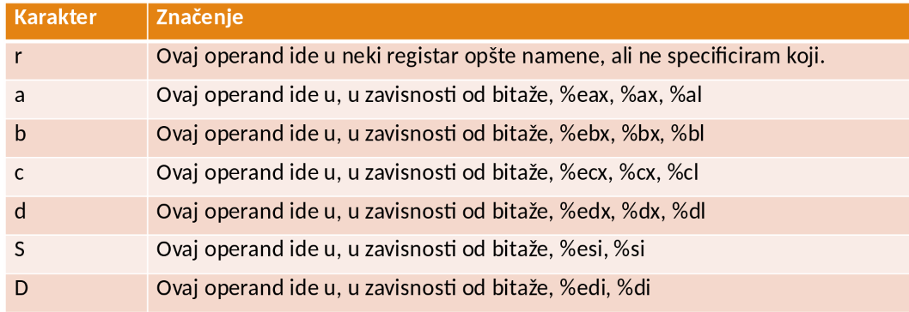
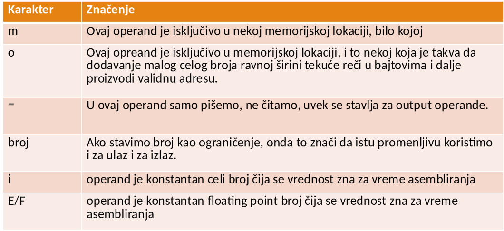
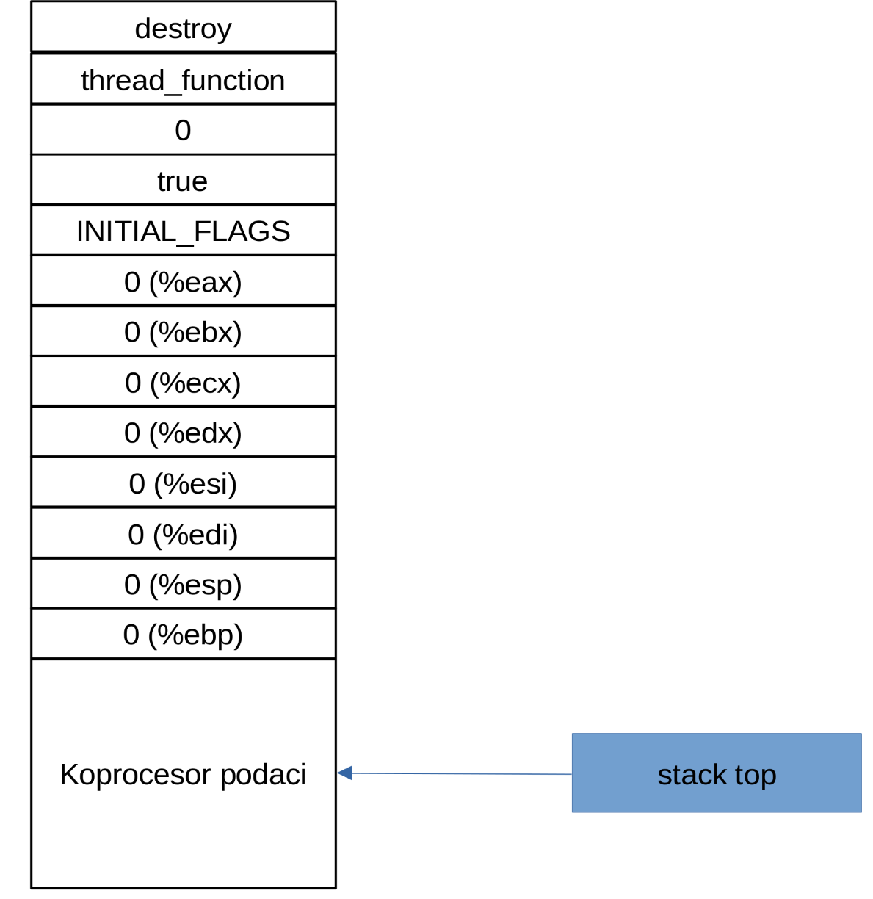
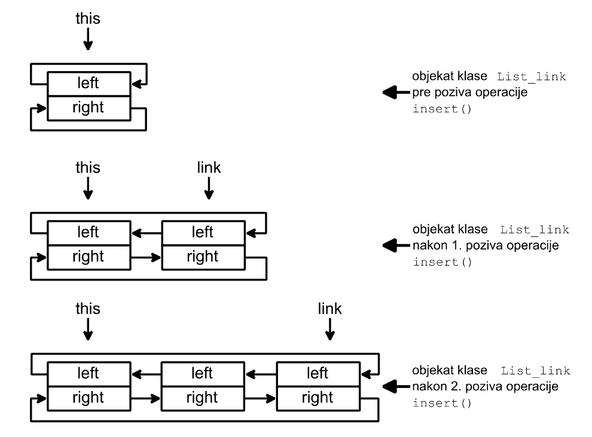

Veljko Petrović
April, 2024
FLOATING POINT EXCEPTION), a drugi je rezervisan za vektor
obrađivača prekida sata.FLAGS
registru, recimo, x86 procesora i kontroliše se sa sti i
cli instrukcijama.interrupts_enabled i funkcija
ad__disable_interrupt() i
ad__restore_interrupts().interrupts_enabled sadrži (emulirani) bit
prekida. Njena vrednost određuje da li su (emulirani) prekidi omogućeni
(konstanta true) ili ne.ad__restore_interrupts() utvrdi da je
došlo do odlaganja obrade (emuliranih) prekida
(Interrupt::pending), ona pokreće prethodno odloženu
emulaciju kontrolera pozivom operacije
controller_emulator() klase Interrupt.Linux_signals opisuje reakciju na Linux
signale.sigaction() da saopšti da njena operacija
signal_handler() ima ulogu obrađivača signala
SIGVTALRM i SIGFPE.SA_NODEFER (koju
upisuje u polje sa.sa_flags) da saopšti da nema odlaganja
obrada signala (da je obrađivač signala višeulazni).Linux_signals poništava akcije njenog
konstruktora.Linux_signals::signal_handler() u
slučaju signala SIGVTALRM pozove emulaciju prekida
(Interrupt::emulation()), a u slučaju signala SIGFPE pozove
obrađivača izuzetka (Interrupt::handler()) koji opslužuje
hardverski izuzetak.Interrupt:
Keyboard_controller opisuje kontroler
tastature.data_reg predstavlja registar podataka
kontrolera, a njena operacija input() opisuje ponašanje
kontrolera tastature.input() posredstvom odgovarajućeg Linux sistemskog
poziva.handler():interrupt.handler(KEYBOARD)Interrupt koja emulira tabelu prekida.input() se periodično poziva u toku emulacije
kontrolera.Display_controller opisuje kontroler ekrana.data_reg i status_reg
predstavljaju registre podataka i stanja kontrolera, a njena operacija
output() opisuje ponašanje kontrolera ekrana.output() posredstvom odgovarajućeg Linux sistemskog
poziva.handler() interrupt.handler(DISPLAY) klase
Interrupt koja emulira tabelu prekida.output() se periodično poziva u toku
emulacije kontrolera.Linux_terminal koji
koristi polje ots ove klase da sačuva zatečeni režim rada
Linux terminala, a ts polje da zada njegov novi režim
rada.Linux_terminal.Disk_controller opisuje ponašanje kontrolera
diska.operation_reg, buffer_reg,
block_reg i status_reg odgovaraju registrima
smera prenosa, bafera, bloka i stanja kontrolera, a njena operacija
transfer() opisuje ponašanje kontrolera diska.Disk_controller koristi sistemski
poziv calloc() radi zauzimanja radne memorije, u kojoj se
čuvaju blokovi emuliranog diska.transfer().handler()
interrupt.handler(DISK) klase Interrupt koja emulira tabelu
prekida.exit(). To omogućuje funkcija
ad__report_and_finish()asm asm-qualifiers ( AssemblerInstructions )
asm-qualifiers može biti:
volatile — kaže kompajleru da ne optimizuje,
podrazumevano za osnovni ASM kodinline — kaže kompajleru da minimizuje procenjenu
veličinu ASM koda\n\tasm ("movl %eax, %ebx\n\t"
"movl $56, %esi\n\t"
"movl %ecx, $label(%edx,%ebx,$4)\n\t"
"movb %ah, (%ebx)");asm asm-qualifiers (
AssemblerTemplate
: OutputOperands
: InputOperands
: Clobbers
)asm asm-qualifiers (
AssemblerTemplate
:
: InputOperands
: Clobbers
: GotoLabels
)asm-qualifiersvolatile — isključuje stanovite optmizacije što je
neophodno ako naš kod ima pobočne efekte, tj. ako radi nešto preko
manipulacije ulaznih u izlazne vrednosti.inline — kao ranijegoto — informišemo kompajler da asm kod može skočiti na
neku od labela koje smo specificirali u ‘GotoLabels’ parametru. Ako je
to ikako moguće, ovo valja izbeći.%eax,
recimo, moramo reći %%eax.%n gde n nekakav broj i asm će umesto te
oznake umetnuti vrednost koju pod tim brojem prosleđujemo iz C koda kroz
specifikacije koje se nalaze u OutputOperands i
InputOperands"ograničenje" (izraz)

bsrbtsbtrad__get_index_of_most_signifcant_set_bit(),
ad__set_bit() i ad__clear_bit() posreduju u
korišćenju ovih asemblerskih naredbi.I387_npx omogućuje pripremu i preuzimanje
inicijalnog sadržaja registara numeričkog koprocesora.I387_npx inicijalizuje registre
numeričkog koprocesora i smešta njihov inicijalni sadržaj u polje
initial_context ove klase pomoću asemblerskih naredbi
fninit i fnsave.initial_context_get() klase
I387_npx omogućuje preuzimanje inicijalnog sadržaja
registara numeričkog koprocesora.destroy().ad__stack_init
ad__stack_init na stek smesti:
| Modul | Elementi u kodu |
|---|---|
| sistemske niti | thread_wake_up_deamon() thread_destroyer_deamon() thread_zero() klasa Delta |
| modul za rukovanje procesima | klasa thread klasa Thread_image |
| modul za rukovanje datotekama | - |
| modul za rukovanje random memorijom | klasa Memory_fragment |
| Modul | Elementi u kodu |
|---|---|
| modul za rukovanje kontrolerima | klasa Timer_driver klasa Exception_driver klasa Driver |
| modul za rukovanje procesorom | klasa condition_variable klasa unique_lock klasa mutex klasa Kernel klasa Atomic_region klasa Ready_list klasa Descriptor klasa Permit klasa List_link klasa Failure |

typedef int Stack_item;
class Descriptor : private List_link { // nasledjuje se klasa List_link
// da bi bilo moguce deskriptore niti uvezivati u liste
protected:
Stack_item *stack_top; // pokazivac na vrh steka niti
int priority; // prioritet niti
Permit *last; // adresa poslednje dobijene propusnice };
inline void make_ready(Descriptor *const d);
inline void expect(List_link *const waiting_list);
inline void signal(List_link *const waiting_list);
inline void exclusive_in(Permit *const permit);
inline void wait(const unsigned t, List_link *const waiting_list);
inline void notify_one(List_link *const waiting_list);